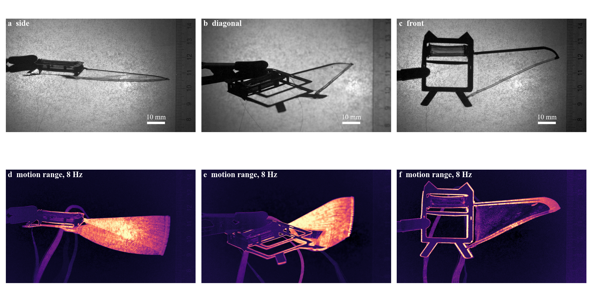

Active membrane wings / Experiments
Experiments
Two sets. The wing alone on the bench (2 electrodes, 1000–1800 V, 1–20 Hz, three views, two tensions), and the full B-cube robot flapping (DEA core, transmission, powered wing; 1000–1400 V, 1–15 Hz, high-speed video). The wing's edge moves up to 1.8 mm out of plane. The robot resonates at about 8.4 Hz and reaches 24° of stroke at 1200 V.
Summary
| Finding | Number | Basis |
|---|---|---|
| The wing's edge moves mostly out of plane | 1.84 mm at 1800 V, 1 Hz (side), ±0.14 mm in plane. Cycle high ∝ $V^{3.2}$ | Measured, wing on the bench |
| The edge goes slack at voltage | Flat tops in the cycle; more tension cuts the motion about 13×. Roll tension 50–96 mN from its length | Measured; mechanism by model (Results, Fig. 3) |
| Motion falls with frequency | About $f^{-0.8}$ to 5 Hz, bump at 15 Hz (edge mode) | Measured, wing on the bench |
| The robot flaps at resonance | Peak at 8 Hz: 24.3 ± 1.0° peak to peak at 1200 V, tip 23 mm. Fit: $f_n$ 8.4 ± 0.2 Hz, $\zeta$ 0.07 | Measured, robot |
| The stroke spring is not linear | Peak broader than one mode allows; 1.4 kV adds only 8 % at 8 Hz. Free decays 8.6–9.0 Hz; small ringing in the 1 Hz runs 7.7 Hz | Measured; a softening spring predicts the saturation (Models) |
| The DEA force lags the voltage | $\tau$ = 38 ± 13 ms from the robot sweep; about 50 ms from the wing's bench sweep | Model fit to two independent data sets |
| Voltage | $V^2$ at 1 Hz (×1.44 from 1000 to 1200 V); only ×1.08 at 8 Hz from 1200 to 1400 V | Measured, robot |
| Powering the wing barely changes the stroke size | From the tip: 24.4 against 23.3° at 8 Hz; tip 23.4 against 22.3 mm, within calibration. Shape may differ (asymmetry reversed) | Measured; an earlier +20 % was a tracking error (Analysis) |
Robot flapping

Phantom VEO 710L, 200 fps, 832 × 600 px, 0.152 mm/px. Bottom row: brightest minus darkest pixel over the run.

- Equation (c): one mode with a lagged force, $\theta_1(f) = \dfrac{K}{\sqrt{(1-r^2)^2+(2\zeta r)^2}}\,\dfrac{1}{\sqrt{1+(2\pi f\tau)^2}}$, $r = f/f_n$. Fit with $\zeta$ fixed at 0.07 from the decays: $K$ 4.7°, $f_n$ 8.38 Hz, $\tau$ 38 ms. Freeing $\zeta$ gives 0.068, the same.
- Trend (c): the model gets the peak's place and height, and needs the lag: without it the peak would be twice as high. It is too narrow: the measured peak is about twice as broad. A softening spring, fitted to the sweep, also predicts the 1.4 kV saturation (Models).
- Trend (d): free decays after the drive stops, 8.6 and 9.0 Hz; the change of frequency read from zero crossings is within the tracking noise. The small ringing at the bottom of the 1 Hz cycle sits lower, at 7.7 Hz.
- Trend (e): at 1 Hz the stroke goes as $V^2$, as a DEA should. At 8 Hz, 1400 V adds only 8 %: an end stop, the transmission, the core's strain limit, or the run itself, which cut out at 2.2 s.
- Validate: log the drive voltage with the video (an LED on the drive) to measure $\tau$ as a phase; sweep at two amplitudes to map $f_n$ against stroke; pluck the robot at 0 V before and after each run.
| Wing | f (Hz) | V | Stroke, fundamental (°) | 2nd / 1st harmonic |
|---|---|---|---|---|
| powered | 1 | 1000 | 2.9 ± 0.0 | 0.21 |
| powered | 1 | 1200 | 4.2 ± 0.1 | 0.23 |
| powered | 5 | 1200 | 5.9 ± 0.2 | 0.19 |
| powered | 7 | 1200 | 9.1 ± 0.2 | 0.04 |
| powered | 8 | 1200 | 12.4 ± 0.4 | 0.06 |
| powered | 9 | 1200 | 9.8 ± 0.1 | 0.02 |
| powered | 10 | 1200 | 7.1 ± 0.5 | 0.10 |
| powered | 15 | 1200 | 0.4 ± 0.0 | 0.40 |
| powered | 8 | 1400 | 13.4 ± 0.3 | 0.06 |
| unpowered | 8 | 1200 | 9.1 ± 0.4 | 0.19 |
Fundamental = amplitude of the first harmonic of the leading-edge angle, ± spread between blocks of 0.5 s or two cycles. Peak to peak at 8 Hz, 1200 V: 24.3 ± 1.0° (35 cycles). The stroke is the angle in the image, not the 3D stroke. Code and tracks: flapping/code, flapping/data.
Powered against unpowered wing

- Size: from the wing tip, 24.4 ± 1.0° powered and 23.3 ± 1.0° unpowered, 32 cycles each, 8 Hz, 1.2 kV; the tip moves 23.4 ± 1.0 and 22.3 ± 0.9 mm. +5 ± 3 %, within reach of drift.
- Shape: the spring asymmetry is +0.23 powered and -0.43 unpowered; the runs were 20 min apart, so drift is possible.
- Correction: a first analysis gave +20 % with the wing powered. It used a line fitted to the top of the silhouette, which in the unpowered view (filmed from above, camera moved) follows a feature above the spar near the bottom of the stroke. Details on Analysis.
Wing: three views, voltage, frequency, tension
Side view, 1800 V, sine squared, 1 Hz, first 4 s, real time. The rolled edge is the lower line.
Diagonal view, 1800 V, plain sine, 15 Hz, played 8× slower.
![Left, trailing edge shift over 4 s at 1800 V: side view swings between 0.5 and 1.7 mm with flat tops, front view between 0.8 and 1.2 mm, diagonal view with plain sine between 0 and 0.9 mm, almost square. Middle, side view cycle high rises from 0.28 to 1.84 mm between 1000 and 1800 V, steeper than V squared, with a hanging string curve through the points. Right, diagonal swing against frequency, log scales: 0.58 mm at 1 Hz falling to 0.1 mm at 10 and 20 Hz with a bump at 15 Hz; the average stays near 0.37 mm; with more tension everything is 10 to 30 times smaller.](V_views.png)
| Finding | Number | Basis |
|---|---|---|
| Out of plane dominates | 1800 V, 1 Hz: side view high 1.84 mm, swing ±0.69 mm. Front view, in plane: ±0.14 mm | Measured |
| Steep with voltage | Side view high 0.28, 0.82, 1.84 mm at 1000, 1400, 1800 V: about $V^{3.2}$; the swing within the cycle about $V^{4.2}$ | Measured; ascending order |
| Flat tops | Plain sine gives an almost square motion in the diagonal view. The edge seems to go slack at the top of each cycle | Measured; reading |
| Frequency | Diagonal swing ±0.58 mm at 1 Hz, 0.17 at 5 Hz, 0.10 at 10 and 20 Hz, a bump to 0.23 at 15 Hz. The average offset stays 0.35–0.40 mm | Measured; voltage at the device unknown |
| Tension | Out-of-plane swing 13× smaller at 1 Hz, 12–40× at 5–15 Hz, no bump. In plane only 2× smaller | Measured; tension not measured |
| Set again | Front view, 1800 V: cycle low 0.77 mm after the first cycle, 0.97 mm after 9. Side view 0.49 → 0.53 mm. Plain sine, diagonal: back to rest | Measured |
| Shape in plane | Front view, sine squared: $u \propto V^{1.5}$ within the cycle, as in the first run | Measured |
| Roll tension from its length | Cut 52.94 mm, now 61.6–64.8 mm: stretch 1.16–1.22, so 50–96 mN. With more tension: 67–70 mm, 1.27–1.33, 76–131 mN | Measured length, Yeoh fit, thickness 60–87 µm |
- How: same tracker as before, 16 points on the rolled edge and 8 on the leading edge in every frame. 6.14 px/mm from the ruler. Noise 1–4 µm per frame. The side view is about 80° from face-on (root chord 31 px against 205 px in front), so its vertical motion is out of plane, plus at most 0.17× the in-plane motion. The diagonal view, about 60°, mixes both.
- Tension from length: $T = A\,2(\lambda - \lambda^{-2})\,W_1$, with $A$ the strip's cut section (23 mm × 60–87 µm), $\lambda$ = length now / 52.94 mm, and $W_1$ from the P7670 fit ($C_1$ 42.8 kPa). The range covers bead centre or bead edge as the end, and 60 µm (2 × 30) or 87 µm (what a tight 1.6 mm roll implies). If some strip sits inside the glue, the stretch and tension are higher still. The front view may be slightly foreshortened, which also makes these numbers low.
- So the edge is tense: 50–96 mN, against 17–30 mN from the finite-element pull and 4.5 mN from the gravity reading. With $T\kappa = N_n$ and the curvature before voltage (3.0 /m), the skin pulls across the edge with only 0.15–0.29 N/m. The skin carries little across the edge, as the wrinkles already said.
- Direction: the wing was flat with the ruler upright, so the edge moves down, towards the floor, at voltage.
- Weight alone is too small: at 50–96 mN the roll's own weight sags it only 0.09–0.16 mm. Moving it 1.8 mm out of plane takes about 0.17–0.33 N/m across the span, 10–20× the roll's weight. The DEA in the roll can drop 5–18 mN at 1800 V ($\eta_f$ 0.06–0.17), not enough on its own.
- What could do it: a roll that loses a large part of its tension, so the slack skin drapes under its weight and drags the edge down. The model with weight below does this.
- Why it matters: in flight, air pressure loads the edge more than gravity, so a loss of roll tension would move the edge. That is the camber effect we want. But if the edge goes slack at peak voltage, the control saturates, and more tension takes most of it away.
- Frequency: the swing falls about as $f^{-0.8}$ from 1 to 5 Hz while the average holds. Either the film is slow, about 0.1 s, or the amplifier gives less swing at higher frequency. The 15 Hz bump looks like a mode of the slack edge; it is gone with tension. At 18–25 Hz, expect about one fifth of the 1 Hz swing unless that mode is tuned to the stroke.
- Drive: plain sine ran from 0 V to the peak (your note), which is the same shape as sine squared: $V_p(1+\sin\omega t)/2 = V_p \sin^2(\omega t/2 + \pi/4)$. Both respond at the drive frequency, as seen. So differences between "sine" and "sine squared" runs come from run order and wear-in, not from the waveform.
- Not used: the 13 short pieces of the 1000 V side run with tension, 66 kB each.
Model with weight

- Model: the same finite elements, wing flat, its own weight as nodal loads (115–130 mg of film, or doubled for the weighed 250 mg without leading edge). The roll is stretched as cut: 54–122 mN at 0 V for pulls of 6–12.9 mm, which brackets the 50–96 mN from its length.
- Equation: out of plane, the edge and skin hold the weight with tension: drop $\approx q L^2 / (8T)$. Voltage lowers $T$ in the roll and in the skin. Once the skin goes slack it drapes, and the drop grows fast.
- Trend: with a strongly active roll ($\eta_f$ 0.4–0.8), the drop stays near 0.1 mm to 1000 V, then rises to 1.7–2.2 mm at 1800 V. In plane, the bow rises to about 1–1.5 mm and then levels off or falls as the edge goes down instead. Both match the side and front views at 1800 V. With $\eta_f$ 0.1, nothing happens out of plane.
- Against: the first run, 1500 V, top view, bowed 0.45 mm in plane, where these cases give 1.1–1.5 mm. That run may have had more tension, but I cannot tell. $\eta_f$ 0.4–0.8 is also far above the 0.06–0.17 from the earlier fit, which assumed 17–28 mN.
- So: a tense, strongly active roll, with weight doing the rest, explains the bench videos: steep, mostly out of plane, saturating in plane. It is the best reading so far, not a fit.
- Validate: the flip test (it should then rise towards the ceiling relative to the wing, falling to the floor in the room), the 1 g weight test, and the roll DEA force drop, which gives $\eta_f$ directly.
- For lift: air load replaces weight in flight, and is several times larger, so a roll this active would drop the edge further. Earlier lift numbers assumed $\eta_f$ up to 0.17, so they no longer hold. Not yet rerun.
Wing: video
First 3 s, real time. Movement starts at about 0.35 s.
One cycle averaged over 8 cycles, played 3 times. Right: change from before voltage, contrast ×5.
Measured


- How: 8.24 px/mm from the ruler, which may not be at the wing's depth. Edge position from sub-pixel matching of its cross-section in all 2001 frames.
- Outline: span 51.6 mm along the leading edge, straight for 42.7 mm. Root chord 24 mm, 8.3 mm at the end of the roll. Free root edge, about 17° off square. Roll about 1.6 mm wide. A tight 23 mm strip of 60 µm film would be 1.3 mm, so it is loose, or the film is thicker than 30 µm per layer.
- Very sensitive: the edge length changes by only 16 µm over 54 mm (0.03 %) for the 0.18 mm swing. Bowing amplifies small length changes by about 10×, so it is a good sensor, and a small slip can also move it.
- The frame holds: the leading edge moves about 1 µm. The tip moves 18 µm along the edge line at the cycle high, away from the root: the tip piece recoiling, which suggests less force in the edge.
- Root corner: moves 43 µm towards the leading edge and 10 µm along the edge.
- 26.6 Hz peak: the same 1.5 µm on both edges and at the root, so it is the rig or camera shaking, not a string mode. It is close to the predicted string mode, so isolate the rig before test 6.
- Slow change: the cycle low rises from 0.28 mm to 0.34 mm by 5 s, then falls to 0.31 mm by 9 s. No tear is visible at this resolution over 10 cycles.
Why it does not return

- Drive: sine squared with no offset, so $V = V_p \sin^2(\pi f t)$, and each cycle low is at 0 V. Voltage is read from the set waveform, timed from the cycle peaks, and needs checking on a scope.
- So it is not a bias: the edge sits about 0.3 mm from rest at 0 V. The earlier fit with a 0.27 minimum voltage is dropped.
- First cycle: 0.45 mm at the first peak, and only 0.16 mm comes back. After that, about 0.17 mm of swing on a new path.
- Later cycles: rise and fall agree within 3 µm, and the cycle is symmetric about its peak (0.5°). So there is no lag or loop at 1 Hz. A slow creep would show one.
- Equation: $u = u_0 + a\,V^{p}$ with $V$ as set. Best $p$ is 1.5 (rms 2.5 µm, against 6.6 µm for $V^2$); a log fit of the rise alone gives 1.4. The first rise gives 1.65. The model gives 2.2 or steeper, so it does not explain this. Check that the amplifier delivers the set shape.
- Size: the set needs only about 30 µm more edge length, so a small slip in the roll or at the knot or tip would do it. Softening in the first cycle would look the same. Tests 1 and 1b decide.
The roll is active

- As built: 2 electrodes, so 1 active layer in the skin and 60 µm of film. In the roll, top and bottom electrodes face each other from turn to turn, so 2 active layers. Strip 23 mm: 20 mm active, 1.5 mm of contact on each side.
- Model: finite elements with the measured outline, no air. Leading edge and tip held, free root edge, roll held at the knot.
- Equation: on the edge, $T\kappa = N_n$: edge force × curvature = skin pull across the edge. Voltage lowers both. If the skin wins, the edge straightens; if the roll wins, it bows more.
- Passive roll: −0.15 mm at skin $\eta$ 0.15 and 2 mm pull, the wrong sign at every $\eta$.
- Active roll: at 2 mm pull, the +0.18 mm swing needs $\eta_f$ of 0.064, 0.089, 0.113, 0.148 for skin $\eta$ 0.05, 0.15, 0.25, 0.4. At 3.2 mm: 0.076, 0.101, 0.126, 0.166. So $\eta_f$ is fairly well set at 0.06–0.17, while skin $\eta$ is not.
- Same film, same $\eta$? If roll and skin share one $\eta$, it is about 0.07 (2 mm) to 0.09 (3.2 mm). That is low, but near the 0.05–0.15 from the vocal cord fits. The roll has trapped wrinkles and layers that the skin does not, so this is only a guide.
- Pull: 2 mm gives 1.32 mm sag, against 1.6 mm measured, and 1.6 mm needs about 3.5 mm. So the pull was more than 2 mm, or the skin was already loose as cut, or the model is too stiff. Test 2 tells which.
- Against: the root corner moves 120–220 µm across and 160–410 µm along in the model, against 43 and 10 µm measured. A stiffer stub cut this before, not rerun for this roll. The model's sag peaks at 18 mm, the real one at about 32 mm, so the tip end is not right yet. The model has no first-cycle set and goes as $V^{2.2}$ or steeper.
- Out of plane: the side view shows it is the larger motion, so the in-plane fit here explains only part of the picture. See three views.
Wrinkles

| Wrinkle direction, above image $x$ | Measured | Model |
|---|---|---|
| Root third | 49° | 67° |
| Middle third | 40° | 55° |
| Tip third | 36° | 42° |
| Trailing edge, for reference | 36° |
- What this means: the skin carries tension along the lines of the wrinkles, close to parallel to the trailing edge. So the pull goes along the wing, mostly as a band beside the edge, and the skin is close to slack across it.
- Model: same trend, 6–18° too steep. About 88 % of the skin is wrinkled at 0 V. It predicts fewer wrinkles at the tip, yet the strongest streaks are there. That also points to the tip.
- Reading it: streak contrast mixes wrinkle depth and lighting. The side view gives the real depth.

What it means for lift

| Lift change, 4 mm pull, 1500 V, 4 m/s, 6° | Skin $\eta$ 0.05 | 0.15 | 0.25 | 0.4 |
|---|---|---|---|---|
| 2 electrodes, active roll: as built | −0.10 mN | +0.08 mN | +0.22 mN | +0.34 mN |
| 2 electrodes, passive roll | +0.19 mN | +0.58 mN | +0.98 mN | +1.60 mN |
| 4 electrodes, active roll | +0.39 mN | +1.13 mN | +1.85 mN | +2.97 mN |
| 4 electrodes, passive roll | +0.48 mN | +1.27 mN | +2.09 mN | +3.46 mN |
- Baseline: at 0 V the lift is 6.9 mN with 2 electrodes and 5.1 mN with 4, at this pull. For comparison, the first design study had 7 mN of lift change, with 3 active layers, skin $\eta$ 0.5, and 12.4 cm² in the lattice against 6.9 cm² here.
- Active roll cancels the skin: the skin bulges more, but the slacker edge lifts up and loses lift. With 2 electrodes: −0.21 to −0.37 mN at 3.2 mm, +0.03 to +0.83 mN at 5 mm. The lift falls more at low pull.
- 4 electrodes: the roll takes only 10–20 % off, as the skin then wins. So with an active roll, this is the wing to try. Predicted lift change up to about 3 mN at skin $\eta$ 0.4, about 60 % of the baseline.
- At your 2 mm: no number. The lift solver fails below 3 mm, because the slack skin folds the mesh in plane. A fallback I tried moved the baseline by up to 13 % and still failed at 2 mm, so I dropped it. The trend says the lift change at 2 mm is negative as built.
- Not in these runs: inboard of the leading edge root, about 0.9 cm² is not in the lattice. The thread is assumed to hold its position at voltage.
- Flapping numbers: the free-flight and L/W figures on the POC and Flittermouse pages used $\eta$ 0.5 on the skin and a passive roll, so treat them as upper limits. The lift a wing makes without voltage is not affected by this.
Files
Robot flapping: flapping/code/track.py (leading-edge tracking), pair.py, decay.py, ring1hz.py, sweepfit.py; figures in results/figures_tests.py. Wing on the bench: geometry.py, video_tracks.py, ends_drive.py, drive_check.py, first_rise.py, track_views.py, views_analysis.py, figures_views.py, fibre_tension.py, fit_gravity.py, figures_gravity.py, fit_wing.py, fit_roll.py, figures_video.py, figures_stack.py, figures_fit.py (wrinkle lines). From before the roll was known: fit_stack.py, fit_family.py, fit_sign.py, fit_cases.py, fit_stub.py, lift_bridge.py. Data: data/. All figures also as SVG: shape, time, fit, views, weight model, drive, lift, contrast, wrinkles. Background: B-cube POC.